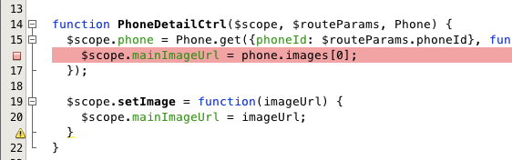
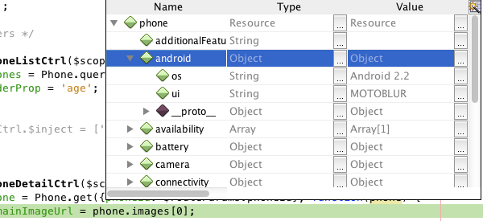
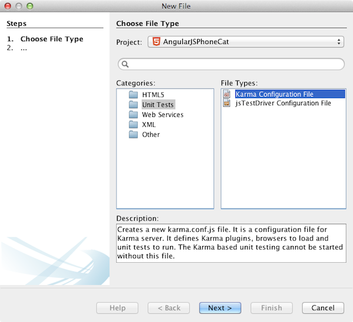
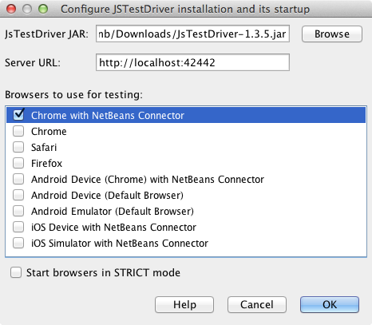
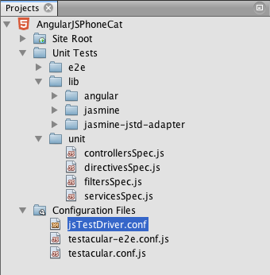

Apache NetBeans
Apache NetBeansLatest release
Отладка и тестирование JavaScript в приложениях HTML5
| This tutorial needs a review. You can open a JIRA issue, or edit it in GitHub following these contribution guidelines. |
Приложения HTML5 обычно сочетают HTML, CSS и JavaScript для создания приложений, которые запускаются в браузерах и которые отображаются на различных устройствах, включая смартфоны, планшеты и ноутбуки. В настоящем документе показано, как IDE предоставляет инструменты, которые могут использоваться в отладке и тестировании файлов сценариев JAVA в IDE.
Если необходимо выполнять отладку файлов JavaScript в приложении HTML5, рекомендуется установить расширение NetBeans Connector для браузера Chrome. Поддержка отладки включается автоматически при запуске приложения в браузере и установке расширения.
IDE также позволяет с легкостью настраивать и выполнять тестирование модулей для файлов JavaScript на тестовой платформе Jasmine с помощью исполнителей тестов Karma или JS Test Driver. Исполнители тестов можно настроить для выполнения модульных тестов с использованием различных браузеров. Кроме того, в них можно мгновенно выбрать библиотеки, сценарии и тесты JavaScript, которые необходимо загружать в IDE при выполнении тестов. В случае ошибки теста можно воспользоваться отладчиком для поиска кода с ошибкой.
Подробнее об установке расширения NetBeans Connector для браузера Chrome см. в учебном курсе Начало работы с приложениями HTML5.
Дополнительные сведения о функциях редактирования JavaScript в IDE см. в разделе Создание файлов JavaScript в документе Руководство по разработке приложений в IDE NetBeans.
Для просмотра демонстрационного ролика этого учебного курса см. раздел Видеоролик по тестированию и отладке JavaScript в приложениях HTML5.
Для выполнения этого учебного курса потребуются следующие материалы.
| Программное обеспечение или ресурс | Требуемая версия |
|---|---|
8.0 |
|
7 или 8 |
|
— |
|
1.x |
|
— |
Примечания.
-
В этом документе используется сервер JS Test Driverдля запуска тестов модулей JavaScript. Рекомендуется ознакомиться со свойствами сервера в разделе Домашняя страница проекта драйвера JS Test.
-
Предполагается, что читатель обладает базовыми знаниями или опытом программирования на HTML, CSS и JavaScript.
Создание образца приложения HTML5
Произведите следующие действия, чтобы создать образец приложения HTML5 с помощью шаблона сайта.
-
Выберите 'Файл' > 'Новый проект' (Ctrl-Shift-N; ⌘-Shift-N в Mac) в главном меню, чтобы открыть мастер создания проектов.
-
Разверните узел Образцы в мастере создания новых проектов и выберите категорию HTML5.
-
Выберите проект Учебный курс по телефонному справочнику AngularJS. Нажмите кнопку 'Далее'.

Figure 1. Образец проекта 'Учебный курс по телефонному справочнику AngularJS' в мастере создания новых файлов
-
Укажите местоположение проекта. Нажмите кнопку 'Готово'.
Примечание. Обратите внимание, что в качестве URL-адреса шаблона указано значение github. Для получения архива шаблона IDE требуется доступ в сеть. В случае возникновения проблем с загрузкой архива проверьте настройки прокси-сервера в окне "Параметры".
После нажатия кнопки 'Готово' среда IDE создаст проект и откроет файл index.html в редакторе. В окне 'Проекты' отобразится проект, содержащий index.html и различные таблицы стилей CSS, а также файлы и библиотеки JavaScript.

Figure 2. Узлы проекта 'Учебный курс по телефонному справочнику AngularJS' в окне 'Проекты'
Проект также включает в себя несколько модулей тестирования JavaScript и файлов конфигурации, которые были созданы по умолчанию.
-
Убедитесь, что в списке на панели инструментов выбран Chrome с NetBeans Connector.

Figure 3. Браузер, выбранный в раскрывающемся списке на панели инструментов.
-
Нажмите кнопку 'Выполнить' на панели инструментов (F6) или щелкните правой кнопкой мыши узел проекта в окне 'Проекты' и выберите 'Выполнить'.
Когда вы запустите проект с помощью кнопки 'Выполнить', первая страница приложения HTML5 откроется в браузере Chrome и там отобразится список мобильных телефонов. При нажатии на имя мобильного телефона на странице отображаются сведения о телефоне.

Figure 4. Приложение 'Учебный курс по телефонному справочнику AngularJS' в окне браузера
Обратите внимание, что на вкладке браузера имеется желтая полоса, которая является уведомлением о том, NetBeans Connector выполняет отладку вкладки. IDE и браузер связаны и имеют возможность взаимодействовать друг с другом в тех случаях, когда желтая полоса видна. При запуске приложения HTML5 из IDE отладчик JavaScript включается автоматически. После сохранения изменений в файле или внесении изменений в таблицу стилей CSS не нужно перезагружать страницу, потому что окно браузера автоматически обновляется с учетом изменений.
При закрытии желтой полосы или щелчка 'Отмена' разрывается соединение между IDE и браузером. При разрыве соединения необходимо повторно запустить приложение HTML5 из IDE для использования отладчика JavaScript.
Также следует отметить, что значок NetBeans отображается в местоположении адреса URL поля браузера. Вы можете щелкнуть значок, чтобы открыть меню, которое предоставляет различные варианты для изменения размера изображения в браузере и для включения режима проверки в режиме NetBeans.
Использование отладчика JavaScript
В этом упражнении описывается размещение точки останова в файле JavaScript и повторный запуск приложения. Для быстрого просмотра значений переменных можно использовать подсказку редактора.
-
Разверните узел
jsв окне 'Проекты' и дважды щелкните файлcontrollers.js, чтобы открыть файл в редакторе. -
Поместите точку останова строки на 16 строке в
controllers.js, щелкнув левую границу.

Figure 5. Точка останова задана в редакторе
Для просмотра точек останова, заданных в проекте, выберите 'Окно' > 'Отладка' > 'Точки останова', чтобы открыть окно точек останова.

Figure 6. Список точек останова в окне 'Точки останова'
-
Нажмите кнопку 'Выполнить' на панели инструментов, чтобы повторно запустить проект.
При запуске проекта отобразится та же страница, поскольку не была достигнута заданная точка останова.
-
В браузере нажмите на одну из записей на странице, например Motorola Atrix4G.
Вы увидите, что страница загружена частично и данные для телефона отсутствует, поскольку данные не были переданы в JavaScript и визуализированы.

Figure 7. Страница сведений приложения частично будет загружена в браузер
-
В редакторе IDE вы можете видеть, что точка останова была достигнута и что счетчик программы находится в настоящее время в строке 16 файла
controllers.js.
-
Подведите курсор к переменной
phoneдля просмотра подсказки с информацией о переменной.

Figure 8. Подсказка переменной в редакторе
В подсказке отображается следующая информация: phone = (Resource) Resource .
-
Нажмите на подсказку, чтобы расширить ее и просмотреть список переменных и значений.

Figure 9. Расширенная подсказка переменной в редакторе
Например, при расширении узла android отображаются значения строк os и ui .
Также можно выбрать 'Окно' > 'Отладка' > 'Переменные' для просмотра списка в окне 'Переменные'.
-
Используйте кнопки на панели инструментов для перехода между функциями JavaScript в библиотеке
angular.jsили щелкните 'Продолжить' (F5), чтобы возобновить работу приложения.
Выполнение тестов JS Unit
IDE можно с легкостью настроить для выполнения модульного тестирования с помощью исполнителей тестов Karma или JS Test Driver. Karma и JS Test Driver - исполнители тестов, предоставляющие целевой URL-адрес для выполнения модульных тестов JavaScript.
В этом учебном курсе показано, как выполнять модульные тесты JavaScript, включенные в состав образца проекта, с помощью исполнителя тестов Karma. В образец проекта уже включен файл конфигурации Karma. При запуске тестов запускается тестовый сервер и ожидает выполнения тестов. В окне браузера отображается статусное сообщение сервера, указывающее на то, что сервер запущен и находится в режиме ожидания.
Выполнение тестов с помощью Karma
Для выполнения тестов с помощью Karma прежде всего необходимо загрузить Karma и сохранить файл на локальном компьютере. После установки Karma потребуется создать файл конфигурации Karma, а затем указать папку установки и путь к файлу конфигурации в окне "Свойства проекта".
-
Установите Karma.
Вы можете выбрать способ и папку назначения для установки Karma. Папку установки можно указать позже при настройке проекта для работы с Karma. Сведения о вариантах установки Karma можно найти на веб-сайте Karma.
-
Создайте файл конфигурации Karma.
В рамках данного учебного курса этот этап можно пропустить, так как файл конфигурации Karma уже включен в состав образца приложения. Чтобы создать структуру файла конфигурации Karma, выберите "Файл конфигурации Karma" в категории "Модульные тесты" мастера создания файлов.

Figure 10. Новый файл конфигурации Karma в мастере создания файлов
Также можно выполнить команду Karma init в командной строке. Дополнительные сведения об использовании команды Karma init см. в документации Karma.
-
Разверните узел "Файлы конфигурации" в окне "Проекты" и дважды щелкните файл
karma.conf.js, чтобы открыть его в редакторе. Обратите внимание, что образец проекта включает в себя два файла конфигурации Karma.
В файле конфигурации Karma перечислены файлы, которые необходимо обрабатывать или исключать при выполнении тестов. Также здесь перечислены подключаемые модули Karma, которые требуются для выполнения тестов в данной конфигурации.

Figure 11. Файл конфигурации Karma в редакторе
-
Правой кнопкой мыши щелкните узел проекта в окне "Проекты" и выберите "Свойства" во всплывающем меню.
-
Выберите категорию "Тестирование JavaScript" в разделе "Категории" окна "Свойства проекта".
-
В списке "Тестовый провайдер" выберите Karma. Нажмите OK.
-
Снова откройте окно "Свойства проекта" и выберите Karma в категории "Тестирование JavaScript" в разделе "Категории".
-
Укажите путь к папке установки Karma.
Если установка Karma была выполнена в каталог проекта, можно нажать "Поиск", и IDE обнаружит папку установки автоматически. Также можно нажать кнопку "Обзор" и выбрать папку установки Karma вручную.
-
Укажите путь к файлу конфигурации Karma. Нажмите OK.
В рамках данного учебного курса вы можете нажать кнопку "Поиск", и IDE обнаружит файл конфигурации Karma, используемый по умолчанию. Также можно нажать кнопку "Обзор" и выбрать файл конфигурации вручную.

Figure 12. Категория
При нажатии на кнопку ОК под узлом проекта в окне "Проекты" появится узел Karma. Щелкните узел Karma правой кнопкой мыши, чтобы запустить/остановить сервер Karma или выбрать файл конфигурации.
-
Щелкните правой кнопкой мыши узел "Karma" в окне "Проекты" и выберите пункт меню "Запуск".
В результате будет запущен сервер Karma и откроется окно браузера с сообщением о статусе сервера.

Figure 13. Статус сервера Karma в окне браузера Chrome
В окне "Результаты" отображаются сведения о статусе сервера. Также программа предлагает установить отсутствующие модули (если необходимо).

Figure 14. Настройка узла 'jsTest Driver' в окне 'Службы'
Примечание. Для выполнения тестов должно быть открыто окно браузера и запущен сервер Karma.
-
Щелкните правой кнопкой мыши узел Karma и выберите "Выбрать конфигурацию >
karma.conf.js", чтобы программа использовала верный файл конфигурации.
-
Отключите все точки останова, заданные в проекте.
Точки останова можно отключить, сняв флажки для точек останова в окне 'Точки останова'.
-
Щелкните правой кнопкой мыши узел проекта в окне 'Проекты' и выберите 'Тестирование'.
Если выбрать пункт меню "Тестирование" исполнитель тестов запускает модульные тесты для файлов. В IDE открывается окно "Результаты тестов", в котором отображаются результаты тестирования.

Figure 15. Результаты тестирования Karma
Выполнение тестов с помощью JS Test Driver
Параметры использования JS Test Driver в IDE можно настроить в диалоговом окне конфигурации JS Test Driver, которое можно открыть, выбрав узел JS Test Driver в окне "Службы". В диалоговом окне конфигурации можно указать местоположение JAR-сервера JS Test Driver и выбрать браузеры для выполнения тестов. Узел JS Test Driver позволяет быстро определить, запущен ли сервер, а также запустить или остановить сервер.
Подробнее о настройке сервера JS Test Driver см. в документации Начало работы с JsTestDriver.
-
Загрузите JAR JS Test Driver и сохраните файл JAR в локальной системе.
-
В окне 'Службы' щелкните правой кнопкой мыши узел JS Test Driver и выберите 'Настройка'.

Figure 16. Настройка узла 'jsTest Driver' в окне 'Службы'
-
В диалоговом окне 'Настроить' щелкните 'Обзор' и найдите загруженный файл JAR JS Test Driver.
-
Выберите Chrome с NetBeans Connector (в NetBeans IDE 7.3 - Chrome с NetBeans JS Debugger) в качестве браузера. Нажмите кнопку ОК.

Figure 17. Диалоговое окно 'Настройка узла 'jsTest Driver'
Примечания. Местоположение файла JAR для JS Test Driver нужно указывать только при первой настройке JS Test Driver.
Список браузеров, которые могут быть захвачены и использованы для тестирования в браузерах, установленных в системе. Можно выбрать несколько браузеров, в качестве дополнительных, но для запуска тестов окно, которое может быть дополнительным для сервера, должно быть открыто для каждого браузера. Выбранные браузеры будут захвачены автоматически при запуске сервера из IDE.
Если выбран вариант "Chrome с подключаемым модулем NetBeans", появляется возможность отладки тестов, выполняемых с помощью JS Test Driver.
-
Щелкните правой кнопкой мыши узел проекта в окне "Проекты" и выберите "New > Other"(Создать > Другое).
-
Выберите Файл конфигурации jsTestDriver в категории 'Тестирование модулей'. Нажмите кнопку 'Далее'.
-
Убедитесь, что jsTestDriver задан как 'Имя файла'.
-
В поле 'Созданный файл' убедитесь, что файл находится в папке
configпроекта (AngularJSPhoneCat/config/jsTestDriver.conf).
Примечание. Файлом конфигурации jsTestDriver.conf должна быть папка config проекта. Если местоположением созданного файла не явлется папка config , нажмите 'Обзор' и выберите папку AngularJSPhoneCat - Файлы конфигурации в диалоговом окне.
-
Убедитесь, что установлен флажок для загрузки библиотек Jasmine. Нажмите кнопку 'Готово'.

Figure 18. Мастер создания новых файлов конфигурации jsTestDriver
*Примечание.*Для запуска jsTestDriver необходимо загрузить библиотеки Jasmine. Если вы получаете уведомление о том, что IDE не удается загрузить библиотеки Jasmine, проверьте настройки прокси IDE в окне 'Параметры'.
После нажатия кнопки 'Готово' среда IDE создаст файл конфигурации схемы jsTestDriver.conf и откроет файл в редакторе. В окне 'Проекты' отобразится, что файл конфигурации был создан в узле 'Файлы конфигурации'. Если развернуть папку lib в узле 'Тесты модулей', то будет видно, что к проекту были добавлены библиотеки Jasmine.

Figure 19. Папка 'Тесты модулей' в окне 'Проекты'
В редакторе можно увидеть следующее содержимое файла конфигурации, которое создается по умолчанию:
server: http://localhost:42442
load:
- test/lib/jasmine/jasmine.js
- test/lib/jasmine-jstd-adapter/JasmineAdapter.js
- test/unit/*.js
exclude:Файл конфигурации определяет местоположение по умолчанию на локальном сервере, который используется для запуска тестов. Также в файле указываются файлы, которые должны быть загружены. По умолчанию список включает в себя библиотеки Jasmine и все файлы JavaScript, которые находятся в папке unit . Тесты обычно находятся в папке unit , но можно изменить список, чтобы указать местоположение других файлов, которые необходимо загрузитьдля запуска тестов. Чтобы запустить тесты модулей, также можно добавить местоположение файлов JavaScript, которые необходимо протестировать, и библиотеки Angular JavaScript в список загружаемых файлов.
В рамках данного учебного курса для выполнения тестов с помощью JS Test Driver потребуется добавить в список загружаемых файлов следующие файлы (выделены полужирным шрифтом).
load:
- test/lib/jasmine/jasmine.js
- test/lib/jasmine-jstd-adapter/JasmineAdapter.js
*
- app/lib/angular/angular.js
- app/lib/angular/angular-mocks.js
- app/lib/angular/angular-route.js
- app/lib/angular/angular-animate.js
- app/lib/angular/angular-resource.js
- app/js/*.js
*
- test/unit/*.js-
После обновления файла конфигурации можно щелкнуть правой кнопкой мыши узел проекта в окне "Проекты" и выбрать "Тестирование".
После щелчка 'Тестировать IDE' автоматически открывается средство запуска JS Test в браузере Chrome и две вкладки в окне 'Выходные данные'.

Figure 20. jsTestDriver запущен в окне браузера
В окне браузера Chrome отображаетс сообщение о запуске сервера jsTestDriver. Отображается сообщение о том, что сервер запущен на localhost:42442 . На вкладке 'Сервер js-test-driver' в окне 'Выходные данные' отображается состояние сервера.
Обратите внимание, что JsTestDriver выполняется на вкладке браузера, а подключаемый модуль NetBeans выполняет отладку вкладки. Возможность отладки модульных тестов становится доступна при выполнении тестов с помощью JS Test Driver, если в качестве одного из целевых браузеров выбран вариант "Chrome с подключаемым модулем NetBeans".

Figure 21. вкладка 'Сервер js-test-driver' в окне 'Выходные данные'
Примечание. Для выполнения тестов модулей окно браузера должно быть открыто и сервер jsTestDriver должен быть запущен. Можно запустить сервер и открыть окно, щелкнув правой кнопкой мыши узел JS Test Driver в окне 'Службы' и выбрав 'Пуск'.

Figure 22. Выполнение тестов JS Unit в окне 'Выходные данные'
-
Выберите "Окно > Результаты > Результаты тестов" в главном меню, чтобы открыть окно "Результаты тестов" и просмотреть итоги выполнения.

Figure 23. Окно 'Результаты теста'
Можно нажать зеленый флажок в левом границе окна, чтобы просмотреть расширенный список успешно пройденных тестов.
Отладка модульных тестов JS с помощью JS Test Driver
В этом упражнении показано, как выполнять отладку модульных тестов в IDE с помощью JS Test Driver.
Примечание. NetBeans IDE 8.0 не поддерживает отладку тестов, выполняемых с помощью Karma.
-
Разверните папку
jsв окне 'Проекты' и дважды щелкните файлcontrollers.js, чтобы открыть файл в редакторе. -
Измените строку 7 в файле для внесения следующих изменений (выделены*полужирным* шрифтом). Сохраните изменения.
function PhoneListCtrl($scope, Phone) {
$scope.phones = Phone.query();
$scope.orderProp = '*name*';
}При сохранении изменений страница автоматически перезагружается в браузере. Отображается изменение порядка телефонов в списке.
-
Убедитесь, что сервер JS Test Driver запущен и что сообщение состояния отображается в окне браузера Chrome.
-
Щелкните правой кнопкой мыши узел проекта в окне 'Проекты' и выберите команду 'Тестирование'.

Figure 24. Тест с ошибкой в окне 'Результаты теста'
При запуске теста можно увидеть, что в одном из тестов произошла ошибка с сообщением, что значение "name" было обнаружено вместо ожидаемого значения "age".
-
Откройте вкладку 'Выполнение тестов JS unit' в окне 'Выходные данные'.

Figure 25. Тест с ошибкой на вкладке 'Выполнениетестов JS Unit' в окне 'Выходные данные'
Отображается сообщение о том, что orderProp должно быть age в строке 41.
-
Щелкните ссылку на вкладке 'Выполнение тестов модулей JS' для перехода к строке, в которой в тесте произошла ошибка. Файл теста
controllersSpec.jsоткрывается в редакторе в строке 41 (выделена полужирным шрифтом)
it('should set the default value of orderProp model', function() {
*expect(scope.orderProp).toBe('age');*
});Видно, что в тесте ожидалось "age" как значение scopeOrder.prop .
-
Установите точку останова в строке, где в тесте произошла ошибка (строка 41).
-
Щелкните правой кнопкой мыши узел проекта в окне 'Проекты' и выберите 'Тестирование'.
При повторном запуске теста счетчик программы достигнет точки останова. При наведении курсора на scopeOrder.prop в подсказке видно, что переменная имеет значение "name" при достижении точки останова.

Figure 26. Редактор, в котором отображается IDE, окно 'Оценка кода' и окно 'Переменные'
В качестве альтернативы можно выбрать 'Отладка' > 'Оценка выражений' в главном меню, чтобы открыть окно 'Оценка кода'. При вводе выражения scopeOrder.prop в окне и нажатии кнопки 'Оценить фрагмент кода' ( ) (Ctrl-Enter) в отладчике отображается значение выражения в окне 'Переменные'.
) (Ctrl-Enter) в отладчике отображается значение выражения в окне 'Переменные'.
-
Нажмите кнопку 'Продолжить' на панели инструментов, чтобы завершить выполнение теста.
Заключение
В настоящем учебном курсе демонстрируется, как IDE предоставляет инструменты, которые могут использоваться при отладке и тестировании модулей в файлах JavaScript. Отладка включается автоматически для приложений HTML5 при запуске приложения в браузере Chrome при условии, что расширение NetBeans Connector включено. IDE также позволяет легко настроить и запускать тестирование модулей для файлов JavaScript с помощью платформы тестирования Jasmine и сервера JS Test Driver.
См. также
Подробнее о поддержке приложений HTML5 в IDE см. в следующих материалах на сайте www.netbeans.org:
-
Начало работы с приложениями HTML5. Документ, который показывает, как установить расширение NetBeans Connector для Chrome, а также выполнить создание и запуск простого приложения HTML5.
-
Работа со страницами стилей CSS в приложениях HTML5 Документ, который демонстрирует, как использовать некоторые из мастеров CSS и окон в IDE и режим проверки в браузере Chrome для визуального определения элементов в источниках проекта.
-
Глава Разработка приложений HTML5 в документе Руководство по разработке приложений в IDE NetBeans
Подробнее о запуске тестов модулей с помощью JS Test Driver см. следующую документацию:
-
Страница проекта JS Test Driver: http://code.google.com/p/js-test-driver/
-
Домашняя страница Jasmine: http://pivotal.github.com/jasmine/
-
Введение в JsTestDriver. Введение в использование JsTestDriver с сервером непрерывной интеграции.